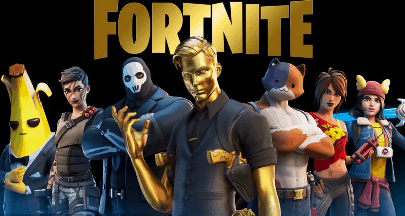

معرفة المزيد
أشهر الألعاب الإلكترونية في العالم.. عالم الإثارة والمتعة
>يُعد عام 2020 من الأعوام الذهبية للألعاب الإلكترونية، فمنذ بداية هذا العام ظهرت مئات الألعاب الإلكترونية الشهيرة ونجحت في جذب ملايين المستخدمين من جميع أنحاء العالم، وفي هذا الصدد يتساءل بعض مستخدمي شبكة الإنترنت: ما هي أشهر الألعاب الإلكترونية في العالم؟؛ لذلك سنسلط الضوء على أحدث تلك الألعاب .
ببجي -1– PUBG
لا نُبالغ إذا قلنا إن لعبة بابجي احتلت المرتبة الأولى في قائمة أشهر الألعاب الإلكترونية في العالم، واللافت فيها أنها تُمكن مستخدميها من إمكانية لعبها بشكل فردي أو مع فريق مخصص، فعند بدء بابجي يبدأ جميع اللاعبين من الصفر دون حمل أي أسلحة وفي أغلب الأحيان بدون ملابس، لتجد نفسك بحاجة إلى الهبوط في منطقة محددة تستطيع من خلالها تجميع الذخيرة والأسلحة والملابس وكل ما تراه قابلًا للاستخدام من أجل تهيئة نفسك.
.png)
2-ماين كرافت – Minecraft
تُعتبر لعبة ماينكرافت من أشهر الألعاب الإلكترونية في العالم، فهي عبارة عن كتل ومكعبات يُمكن للاعب ترتيبها وتركيبها في شبكات ثلاثية الأبعاد وبناء الأشياء بها، ويبلغ عدد مستخدمي هذه اللعبة نحو أكثر من 215 مليون شخص حول العالم كل شهر تقريبًا.
.jpg)
3-League Of Legends
تحتل لعبة ليق اوف ليجيند مكانة كبيرة في قائمة أفضل وأشهر الألعاب الإلكترونية في جميع أنحاء العالم؛ حيث نُشرت بواسطة شركة “ريوت غيمز” لنظام مايكروسوفت ويندوز ونظام أو إس عشرة، وتم الإعلان عنها لأول مرة في الربع الأخير من عام 2008، وصدرت في أواخر عام 2009، وحظيت بشهرة كبيرة بين مُحبي الألعاب الإلكترونية، ووفقًا لمجلة «فوربس» الأمريكية كانت لعبة دوري الأساطير هي الأكثر ممارسة في أمريكا الشمالية وأوروبا من حيث عدد ساعات اللعب.
.jpg)
4-Grand Theft Auto
تم إنشاء لعبة قراند في المملكة المتحدة من قِبل «ديف جونز» وتم تطوير اللعبة لاحقًا على يد «روكستار نورث» وتولت شركة روكستار للألعاب مسؤولية توزيعها على مستخدمي الشكة العنكبوتية؛ حيث تُركز اللعبة على عالم يُمكن للاعب اختيار المهمات للقيام بها والمشاركة في الأنشطة الجانبية، وتُكمن جميع الأنشطة في المغامرة وقيادة السيارات.
.jpg)
5-fortnit
